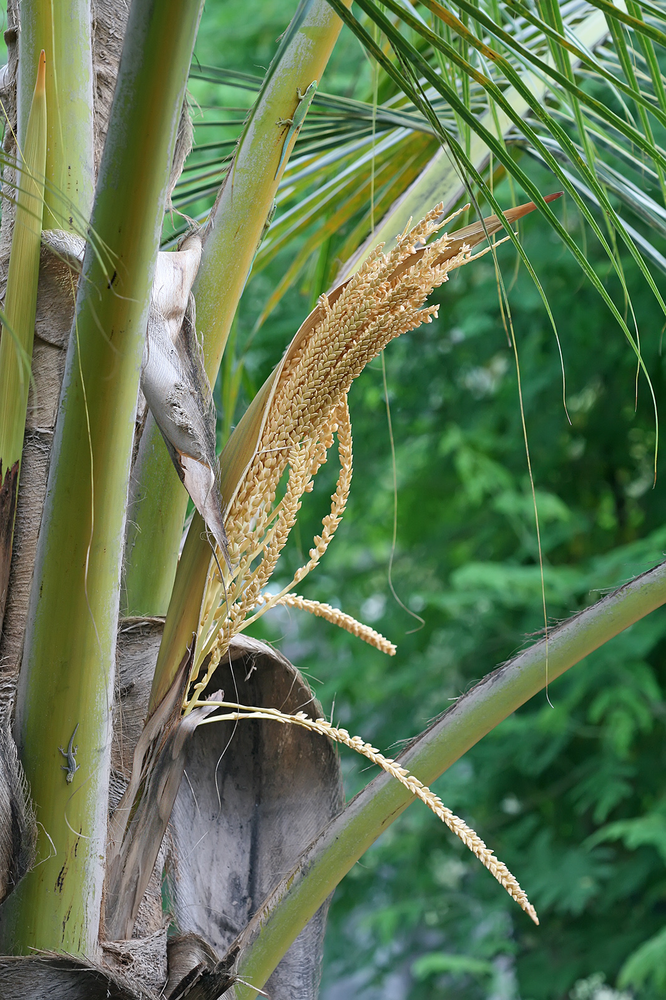
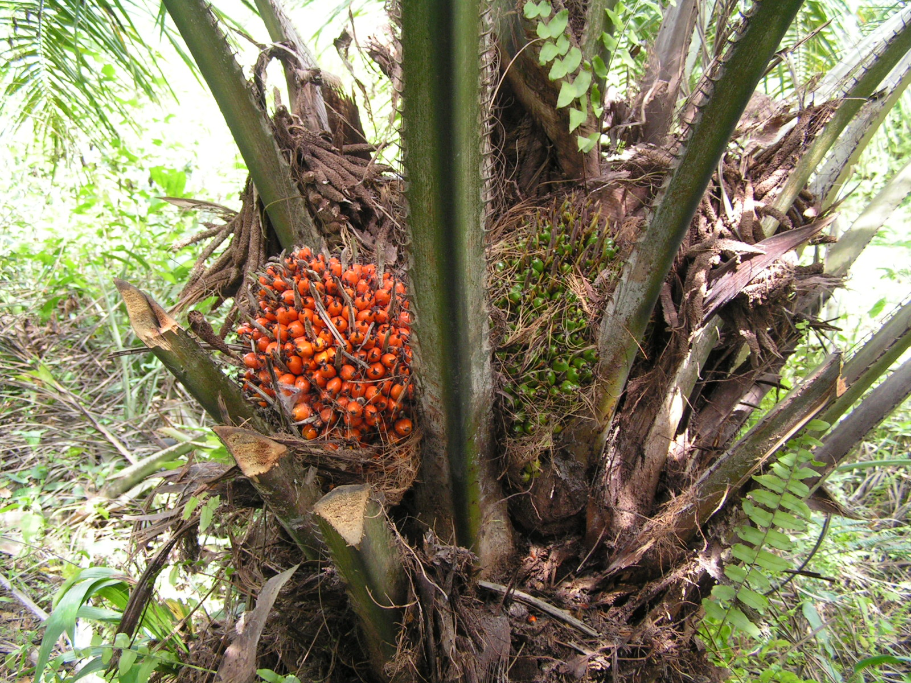

Arecaceae
palm family
Washingtonia robusta (fan palm) from Wikimedia Commons by Infratec~commonswiki, Public Domain |
Phoenix dactylifera (date palm) from Wikimedia Commons by Stan Shebs, Public Domain |
|  Cocos nucifera (coconut palm) from Wikimedia Commons by Muhammad Mahdi Karim - Own work, GFDL 1.2 |
Serenoa repens (saw palmetto) from Wikimedia Commons by Mason Brock (Masebrock) - Own work, Public Domain |
{kind=link}
{kind=link}
{kind=link}
{kind=link}
botanical characteristics
Botany in a Day, p. 190
- growth form
- monocots
- trees and tree-like shrubs
- stems/leaves
- slender, unbranching trunks
- large pinnately or palmately divided leaves
- flowers
- form in clusters, typically surrounded by or emerging from one or more bracts, which may become woody with age
- regular, bisexual flowers, usually small and white
- usually 3 sepals and 3 petals
- reproductive structures
- usually 6 (sometimes 3, 9, or numerous) stamens
- ovary consists of usually 3 carpels (up to 10), either as separate pistils (apocarpous) or one united pistil (syncarpous)
- fruit typically matures as a berry or drupe
distribution
Botany in a Day, p. 190
- about 200 genera and 2600 species worldwide
"Arecaceae", Wikipedia
- most are native to tropical and subtropical climates
- South America, the Caribbean, and areas of the South Pacific and southern Asia are regions of concentration
- some palms that are also native to desert areas such as the Arabian Peninsula and parts of northwestern Mexico
ecological roles
"Arecaceae", Wikipedia
- some insects are specialists to particular taxa
- Raoiella indica, the red palm mite
- Caryobruchus gleditsiae, the palm seed beetle or palm seed weevil
- Rhynchophorus ferrugineus, the red palm weevil, recently introduced to Europe
- Rhynchophorus palmarum, the South American palm weevil
common pharmacological constituents
"Potential metabolites of Arecaceae family for the natural anti-osteoarthritis medicine: A review", ScienceDirect
- polysaccharides, fatty acids, flavonoids, phenolic acids, polyphenols, steroids
"Angiosperm families - Palmae Juss.", DELTA
- accumulated starch other than exclusively ‘pteridophyte type’; not cyanogenic; alkaloids present (occasionally, pyrimidine), or absent; saponins/sapogenins present (occasionally), or absent; proanthocyanidins present (usually, abundantly), or absent (e.g. Livistonia); cyanidin; flavonols present (rarely), or absent; when present, kaempferol and quercetin (also tricin, luteolin, etc.); sieve-tube plastids P-type
patterns in medicinal actions
"Arecaceae", Wikipedia
- nutritive: this family supplies a large amount of the human diet
"Potential metabolites of Arecaceae family for the natural anti-osteoarthritis medicine: A review", ScienceDirect
- Arecaceae plants produce various anti-inflammatory secondary metabolites
- some plants from this family have reportedly been used empirically and scientifically proven to treat osteoarthritis because they contain polysaccharides as chondroprotectors
- mainly safe food ingredients with low toxicity
traditional/cultural uses
"Arecaceae", Wikipedia
- the type member of Arecaceae is the areca palm (Areca catechu), the fruit of which, the areca nut, is chewed with the betel leaf for intoxicating effects
- carnauba wax is harvested from the leaves of South American palms of the genus Copernicia
- rattans, whose stems are used extensively in furniture and baskets, are in the genus Calamus
- palm oil is an edible vegetable oil produced by the oil palms in the genus Elaeis
- several species are harvested for heart of palm, a vegetable eaten in salads
- palm sap is sometimes fermented to produce palm wine or toddy, an alcoholic beverage common in parts of Africa, India, and the Philippines
- the sap may be drunk fresh, but fermentation is rapid, reaching up to 4% alcohol content within an hour, and turning vinegary in a day
- Palmyra and date palm sap is harvested in Bengal, India, to process into gur and jaggery
- coconut is the partially edible seed of the fruit of the coconut palm (Cocos nucifera)
- the fruit of the açaí palm Euterpe has been used for its reputed health benefits.
- saw palmetto (Serenoa repens) is being investigated as a drug for treating enlarged prostates
- palm leaves are also valuable to some peoples as a material for thatching, basketry, clothing, and in religious ceremonies
warnings
"Arecaceae", Wikipedia
- palms have been threatened by human intervention and exploitation
- greatest risk to palms is destruction of habitat, especially in the tropical forests, due to urbanization, wood-chipping, mining, and conversion to farmland
- the harvesting of heart of palm, a delicacy in salads, also poses a threat because it is derived from the palm's apical meristem, a vital part of the palm that cannot be regrown
- the use of rattan palms in furniture has caused a major population decrease in these species that has negatively affected local and international markets, as well as biodiversity in the area
- in 2006, at least 100 palm species were considered endangered, and nine species have been reported as recently extinct
extra information
prominent genera
- Areca (incl. areca nut palm, betel palm)
- Borassus (Palmyra palms)
- Calamus (rattan palms)
- Cocos (coconut palms)
- Copernicia (incl. carnauba wax palm)
- Elaeis (oil palms)
- Euterpe (incl. açaí palm)
- Nypa (nipa palm)
- Phoenix (date palms)
- Sabal (palmettos)
- Serenoa (saw palmetto)
- Washingtonia (fan palms)
plant highlights
see list of materia medica entries here
Nypa fruticans
from Wikimedia Commons by Qaalvin - Own work, CC BY-SA 3.0 |
common names: nipa palm en español: nipa |
{kind=link}
description
"Nypa fruticans", Wikipedia
- unlike most palms, the nipa palm's trunk grows beneath the ground; only the leaves and flower stalk grow upwards above the surface
- flowers are a globular inflorescence of female flowers at the tip with catkin-like red or yellow male flowers on the lower branches
- flower produces woody nuts arranged in a globular cluster on a single stalk, which can weigh as over 60 lb
distribution
"Nypa fruticans", Wikipedia
- native and common on coasts and rivers flowing into the Indian and Pacific Oceans
- nipa palms grow in soft mud and slow-moving tidal and river waters that bring in nutrient; they can be found as far inland as the tide can deposit the floating nuts
- suffers if exposed to pure seawater; it prefers the brackish waters of estuaries
- reportedly naturalized in Nigeria, the Society Islands of French Polynesia, the Mariana Islands, Panama, and Trinidad
medicinal/magical uses
"Nypa fruticans", Wikipedia
- long, feathery leaves of the nipa palm are used by local populations as roof material for thatched houses or dwellings; the leaves are also used in many types of basketry and thatching
- young flower stalk and hard seeds are edible and provide hydration
- in the Philippines and Malaysia, the inflorescence can be tapped to yield a sweet, edible sap collected to produce a local alcoholic beverage called tuba, bahal, or tuak
- tuba can be stored in tapayan (earthenware balloon vases) for several weeks to make a kind of vinegar known as sukang paombong in the Philippines and cuka nipah in Malaysia
- tuba can also be distilled to make arrack, locally known as lambanog in Filipino and arak or arak nipah in Indonesian
- flower petals can be infused to make an aromatic tisane
- in Indonesia, especially in Java and Bali, the sap can be used to make a variant of jaggery
- in Cambodia, its leaves are used for wrapping cakes, and the flowers are sometimes used to make sugar, vinegar, and alcohol
preparation methods
"Nypa fruticans", Wikipedia
- infusion
- vinegar
- ferment
warnings
- no known warnings
Elaeis guineensis
|  from Wikimedia Commons by Bongoman - Own work, CC BY-SA 3.0 |
common names: oil palm en español: palma aceitera |
{kind=link}
description
"Elaeis guineensis", Wikipedia
- leaves are pinnate
- flowers are produced in dense clusters
- each individual flower is small, with three sepals and three petals
- palm fruit is reddish, about the size of a large plum, and grows in large bunches
- each fruit is made up of an oily, fleshy outer layer (the pericarp), with a single seed (the palm kernel), also rich in oil
- when ripe, each bunch of fruit weighs between 10 and 60 lb depending on the age of the palm tree
distribution
"Elaeis guineensis", Wikipedia
- native to west and southwest Africa, specifically the area between Angola and The Gambia
- the species name, guineensis, refers to the name for the area called Guinea, and not the modern country Guinea now bearing that name
- the species is also now naturalised in Madagascar, Sri Lanka, Malaysia, Indonesia, Central America, Cambodia, the West Indies, and several islands in the Indian and Pacific Oceans
medicinal/magical uses
"Elaeis guineensis", Wikipedia
- the principal source of palm oil
- for every 100 kg of fruit bunches, typically 22 kg of palm oil and 1.6 kg of palm kernel oil can be extracted
- in traditional African medicine, different parts of the plant are used as laxative and diuretic, as a poison antidote, as a cure for gonorrhea, menorrhagia, and bronchitis, to treat headaches and rheumatism, to promote healing of fresh wounds and treat skin infections
- in the Yoruba religion, it is associated with its creation myth as the first tree that Ọbatala finds descending to earth
- oil palm fronds often mark areas of sacred religious important or incorporated in traditional orisha garment
- its kernels are also prepared to use as a tool of receiving Ọrunmila's words to the babalawo
preparation methods
"Elaeis guineensis", Wikipedia
- oil
warnings
"Elaeis guineensis", Wikipedia
- cases where native customary lands have been appropriated by oil palm plantations without any form of consultation or compensation
- biodiversity loss is one of the most serious negative effects of oil palm cultivation
- lax enforcement of environmental legislation leads to encroachment of plantations into protected areas, encroachment into riparian strips, open burning of plantation wastes, and release of palm mill pollutants such as palm oil mill effluent in the environment.
- demand for palm oil has increased in recent years due to its use as a biofuel
- environmental groups, such as Greenpeace, claim the deforestation caused by making way for oil palm plantations is far more damaging for the climate than the benefits gained by switching to biofuel
- oil palm production has been documented as a cause of substantial and often irreversible damage to the natural environment
- its impacts include deforestation, habitat loss of critically endangered species, and a significant increase in greenhouse gas emissions
- there is a clear record of fire being used to clear vegetation for oil palm development in Indonesia, where in recent years drought and man-made clearances have led to massive uncontrolled forest fires, covering parts of Southeast Asia in haze and leading to an international crisis with Malaysia
sources
"Angiosperm families - Palmae Juss." on DELTA - DEscription Language for TAxonomy. Retrieved 15 August 2025.
"Arecaceae" on Wikipedia. Retrieved 6 July 2025.
"Elaeis guineensis" on Wikipedia. Retrieved 6 July 2025.
Elpel, Thomas J. Botany in a Day: The Patterns Method of Plant Identification (2021)
Goldberg Blackthorn, Samantha. Ace of Cups Herbal Medicine and Botanical Magic Herbal School (2024)
"Nypa fruticans" on Wikipedia. Retrieved 6 July 2025.
"Potential metabolites of Arecaceae family for the natural anti-osteoarthritis medicine: A review" on ScienceDirect. Retrieved 6 July 2025.